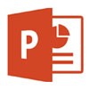

1. ไมโครซอฟต์เวิร์ด (Microsoft Word)
ไมโครซอฟต์เวิร์ด (Microsoft Word) คือ โปรแกรมสำเร็จรูปยอดฮิตโปรแกรมหนึ่งที่ยู่ในชุดของไมโครซอฟต์ออฟฟิศเป็นที่นิยม
ใช้งานกั้นทั้งแบบส่วนตัว ในสำนักงาน หน่วยงาน สถาบันการศึกษาและองค์กรธุรกิจต่าง ๆ
Microsoft Word สามารถติดตั้งแบบเดี่ยวหรือรวมอยู่ในชุดของไมโครซอฟต์ออฟฟิศ สามารถใช้งานกับ
Windows 10 และ Windows Serer รุ่นใหม่เท่านั้น ไม่สามารถทำงานพร้อมกันหลายเวอร์ชัน
โปรแกรมที่อยู่ในชุดของ Microsoft Office ที่ควรทราบ ได้แก่
|
1.Microsoft Word โปรแกรมสร้างงานเอกสารทุกชนิด แทรกรูปภาพ ตารางคำนวณ และกราฟ
พร้อมตกแต่งได้สะดวกรวดเร็ว เพิ่มโหมด Focusสำหรับแสดงเอกสารอย่างเดียว ตัวช่วยอ่านออกเสียง
(Rrad Aloud) ธีมสีดำ |
|
2.Microsoft Excel โปรแกรมสำหรับคำนวณข้อมูลในตารางและสร้างกราฟใช้สูตรประกอบ
การคำนวณได้อย่างสะดวก เพิ่มฟีเจอร์ด้านการวิเคราะห์ข้อมูลหลายอย่าง เพิ่มสูตรใหม่ ๆ และปรับปรุง PowerPivot |
|  |
3.Microsoft PowerPoint โปรแกรมสร้างงานนำเสนอข้อมูล หรือพรีเซนต์งานเพิ่มเอฟเฟ็กต์ Morph,Zoom และรองรับการใช้ปากกามากขึ้น |
|
4.Microsoft Access โปรแกรมด้านฐานข้อมูล ที่ช่วยติดตามรายงานข้อมูลได้อย่างสะดวก รวดเร็ว |
|
5.Microsoft Outlook โปรแกรมจัดการอีเมล และจัดการตารางเวลานัดหมายและข้อมูลเพื่อใช้ในการ
ติดต่อพบปะและทำงานในแต่ละวันให้มีประสิทธิภาพและปลอดภัย เพิ่มโหมดจัดระเบียบอีเมล Focused Inbox |
|
6.Microsoft Publisher โปรแกรมสร้างและออกแบบสิ่งพิมพ์ สำหรับการโฆษณาการตลาด ช่วยให้การออกแบบหรือการผลิตสิ่งพิมพ์เป็นเรื่องง่าย |
2.การเปิดโปรแกรม Microsoft Word
การสร้างเอกสารด้วยโปรแกรม Microsoft Word หรือมักเรียกสั้น ๆ ว่า "Word" เป็นโปรแกรมที่นิยมใช้พิมพ์งานเอกสาร
ต่าง ๆ การเปิดโปรแกรม Microsoft Word สามารถทำได้ ดังนี้
การเปิดโปรแกรม Microsoft Word ด้วยปุ่ม Start
1.คลิกเมาส์ที่ปุ่ม Start
2.คลิกเมาส์ Word เพื่อเปิดการใช้งาน หรือหากโปรแกรมอยู่ด้านล่าง สามารถเลื่อนลงมาดูด้านล่างได้
3.ปรากฏหน้าต่างเริ่มต้น (Start Screen) ของโปรแกรม Microsoft Word
การเปิดโปรแกรม Microsoft Word ด้วยปุ่ม Search windows
ในวินโดวส์ 10 มีเครื่องมือที่เรียกว่า Search windows เป็นรูปแว่นขยายอยู่ข้างปุ่ม Start สามารถใช้ในการเปิดโปรแกรม Microsoft Word ได้ สามารถเปิดโปรแกรมได้ดังนี้
1.คลิกปุ่ม Search windows
2.ปรากฏช่องค้นหา พิมพ์ Word ปรากฏผลลัพธ์ Word ด้านบน แล้วกดปุ่ม Enter
3.ปรากฏหน้าต่างเริ่มต้น (Start Screen) ของโปรแกรม Microsoft Word
|